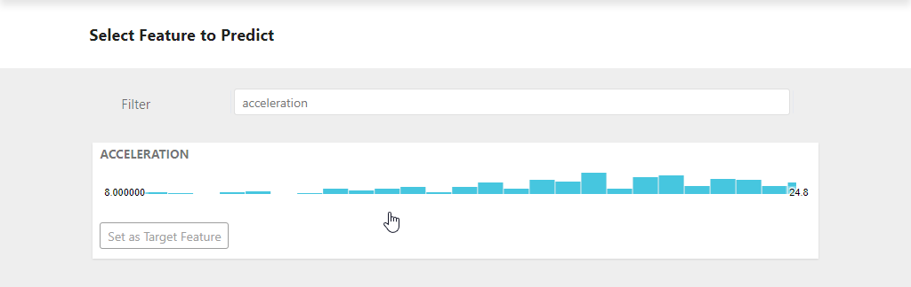
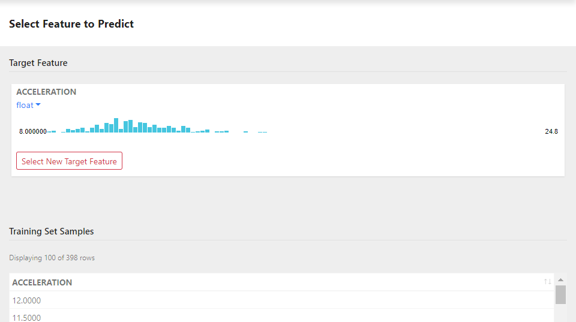

To choose the target feature that you want to predict:
Review the list of available features in the Select Target Feature dialog. Use the Filter field to search for acceleration.

Note: Feature summaries visualize the values for each column/field in the dataset. Distil automatically infers the type of data stored for each feature. To change the inferred value, use the type drop-down on the upper right corner of the summary.
On the acceleration feature summary, click Select Target. Distil adds the feature to the model definition and lists a sample of actual acceleration values.

Note: You can change the target at any time by clicking Select Target in the navigation bar to return to the Select Target view.
The target you select determines the type of results the model will generate.